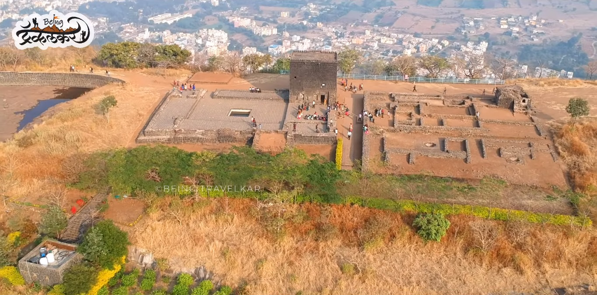
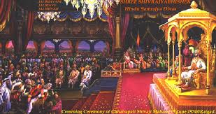

छत्रपती शिवाजीराजे भोसले

छत्रपती शिवाजीराजे भोसले (१९ फेब्रुवारी १६३० ते ३ एप्रिल १६८०) हे एक भारतीय राजे आणि मराठा साम्राज्याचे संस्थापक होते.[१] विजापूरच्या ढासळत्या आदिलशाहीमधून शिवरायांनी स्वतःचे स्वतंत्र राज्य निर्माण करून मराठा साम्राज्याची स्थापना केली. इ.स. १६७४ मध्ये रायगड किल्ल्यावर औपचारिकपणे छत्रपती म्हणून त्यांचा राज्याभिषेक करण्यात आला.
आपल्या कारकीर्दीत शिवाजी महाराजांनी मुघल साम्राज्य, गोवळकोंड्याची कुतुबशाही, विजापूरची आदिलशाही आणि युरोपियन वसाहतवादी शक्तींशी युती व शत्रुत्व दोन्ही केले. शिस्तबद्ध लष्कर व सुसंघटित प्रशासकीय यंत्रणेच्या बळावर छत्रपती शिवाजी महाराजांनी एक सामर्थ्यशाली आणि प्रागतिक राज्य उभे केले. किनारी आणि अंतर्गत प्रदेशातील किल्ल्यांची डागडुजी करण्यासोबतच त्यांनी अनेक नवे किल्लेही उभारले.[३] शिवरायांनी शिस्तबद्ध प्रशासकीय संघटनांसह सक्षम आणि प्रगतीशील नागरी शासन स्थापन केले. त्यांनी प्राचीन हिंदू राजकीय परंपरा, न्यायालयीन अधिवेशने पुनरुज्जीवित केली.
प्रदेशातील भूभागाची इत्यंभूत माहिती, आश्चर्यजनक वेगवान हालचाली आणि गनिमी काव्याचे तंत्र यांच्या सहाय्याने त्यांनी थोडक्या फौजेच्या सहाय्याने बलाढ्य अशा मुघल व आदिलशाही फौजांचा यशस्वीपणे सामना केला. राज्यकारभारात तत्कालीन रूढ असलेल्या पारशी भाषेऐवजी मराठी आणि संस्कृत भाषेचा वापर करण्यास त्यांनी प्रोत्साहन दिले.[४] भारतीय स्वातंत्र्यलढ्यात राष्ट्रवादी नेत्यांनी शिवाजी महाराजांच्या पराक्रमी कथांचा वापर लोकांना एकत्रित आणण्यासाठी आणि त्यांचे मनोबल वाढवण्यासाठी करून घेतला.[५]
जन्म:
फेब्रुवारी १९, १६३० शिवनेरी किल्ला, पुणे
पुणे जिल्ह्यातील जुन्नर शहरानजीक वसलेल्या शिवनेरी या डोंगरी किल्ल्यावर १९ फेब्रुवारी इ.स. १६३० मध्ये छत्रपती शिवाजी महाराजांचा जन्म झाला. इतिहासाच्या अभ्यासकांमध्ये छत्रपती शिवाजी महाराजांची नेमकी जन्मतारीख हा मतभेदांचा मुद्दा आहे. महाराष्ट्र राज्य शासनाने फाल्गुन वद्य तृतीया शके १५५१ (शुक्रवार, १९ फेब्रुवारी १६३०) ही शिवरायांची जन्मतारीख २००१ साली स्वीकारली. इतर संभाव्य तारखांमध्ये ६ एप्रिल १६२७ (वैशाख शुद्ध तृतीया) ही एक जन्मतारीख मानली जात होती.महाराष्ट्र शासनाने शिवाजी महाराजांच्या जन्माच्या ( शिवाजी जयंती ) स्मरणार्थ १९ फेब्रुवारी हा दिवस सुट्टी म्हणून सूचीबद्ध केला आहे.
शिवाजी महाराजांचे नाव शिवाई या देवतेवरून ठेवण्यात आले. एका आख्यायिकेनुसार शिवनेरी गडावरील शिवाई देवीला जिजाबाईंनी आपल्याला बलवान पुत्र व्हावा अशी प्रार्थना केली होती म्हणून या मुलाचे नाव 'शिवाजी' ठेवले गेले. शिवरायांचे वडील शहाजीराजे भोंसले हे मराठा सेनापती होते, ज्यांनी दख्खनच्या सल्तनतची सेवा केली होती. त्यांच्या आई जिजाबाई होत्या, ज्या सिंदखेडच्या लखुजी जाधवरावांच्या कन्या होत्या. जाधव हे देवगिरीच्या यादव राजघराण्यातील वंशाचा दावा करणारे मुघल-संलग्न सरदार होते.
शिवाजी महाराजांचा राज्याभिषेक:
ज्येष्ठ शुद्ध त्रयोदशी शालिवाहन शके १५९५ म्हणजेच ६ जून १६७४
शिवराज्याभिषेक दरबार, जुलिअन तारीख ६ जून १६७४. शिवाजीमहाराजांनी ज्येष्ठ शुद्ध त्रयोदशी शालिवाहन शके १५९५ म्हणजेच ६ जून १६७४ ला स्वतःस राज्याभिषेक करून घेतला आणि एका सार्वभौम राज्याच्या जयघोष केला. कित्येक वर्षे गुलामीत राहिलेल्या मराठी मुलुखात नवचैतन्याचा सोहळा पार पडला. शिवाजी महाराजांचा राज्याभिषेक हा अत्यंत व्यापक आणि भारताच्या इतिहासातील एक अत्यंत महत्वाचा प्रसंग होता. राज्याभिषेकावेळी शिवाजी महाराजांनी छत्रपती हे पद धारण केले. छत्रपती म्हणजे सार्वभौम आणि सर्वेसर्वा. राज्याच्या कारभारासाठी अष्टप्रधान मंडळाची निर्मिती केली आणि राज्याचा कारोभार आणि पदे वाटून देण्यात आली. शिवाजी महाराजांच्या राज्याभिषेकावेळी महाराणी म्हणून सोयराबाई आणि युवराज म्हणून संभाजी महाराजांचा ही अभिषेक करण्यात आला.
छत्रपती शिवाजीराजे भोसले यांच्या शिवराज्याभिषेकाची तयारी कितीतरी महिने अगोदर सुरू झाली होती. राज्यभिषेकासाठी निश्चित अशी कोणती परंपरा नव्हती. प्राचीन परंपरा आणि राजनीतीवरील ग्रंथातून काही विद्ववानांनी प्रथा-परंपरांचा अभ्यास केला. शिवराज्यभिषेकासाठी देशातील कानाकोपऱ्यांतून ब्राह्मणांना आमंत्रण देण्यात आले होते. लोक मिळून जवळपास लाखभर लोक रायगड या ठिकाणी जमा झाले होते. चार महिन्यांसाठी त्यांची राहण्याची उत्तम व्यवस्था करण्यात आली होती. रोज त्यांना मिष्ठान्नाचे जेवण असे. सरदार राज्यातील श्रीमंत गणमान्य व्यक्ती. दुसऱ्या राज्यांचे प्रतिनिधी, विदेशी व्यापारी आणि सामान्य जनता असे सर्वच या सोहळ्याला उपस्थित झाले होते. प्रत्येक दिवशी एका धार्मिक विधीत आणि संस्कारात शिवाजी महाराज गढून गेले होते. राजे शिवाजी यांनी सर्वप्रथम आपली आई जिजाबाईंना नमस्कार केला. त्यांचे आशीर्वाद घेतले.
त्यानंतर महाराजांनी विविध मंदिरांत जाऊन देवदर्शन केले. देवके दर्शन घेतले, पूजा केली आणि ते रायगडाला १२ मे १६७४ला परत आले. तुळजापूरला भवानी मातेच्या दर्शनासाठी त्यांना जाणे शक्य नव्हते. म्हणून चार दिवसांनी ते प्रतापगडवरील प्रतिष्ठापना केलेल्या भवानीमाता देवीच्या दर्शनासाठी गेले. त्यावेळी सव्वा मण सोन्याची छत्री भवानी मातेस अर्पण केली. २१ मेला पुन्हा रागयगडावर ते धार्मिक विधीत गुंतून गेले. महाराजांनी २८ मेला प्रायश्चित्त केले जानवे परिधान केले. दुसऱ्या दिवशी दोन राण्यांबरोबर पुन्हा विवाह विधी केला. त्यावेळी गागाभट्टांना ७००० होन तर इतर सर्व ब्राह्मणांना मिळून १७००० होन दक्षिणा दिली.
मृत्यू आणि उत्तराधिकार:
शिवाजीराजांच्या वारसदाराचा प्रश्न गुंतागुंतीचा होता. 1678 मध्ये शिवरायांनी संभाजीराजांना पन्हाळा येथे बंदिस्त केले. त्यानंतर संभाजीराजे आपल्या पत्नीसह एक वर्षासाठी मुघलांकडे गेले. पुढे ते पश्चात्ताप न करता घरी परतले आणि पुन्हा पन्हाळ्याला बंदिस्त झाले.
हनुमान जयंतीच्या पूर्वसंध्येला ३-५ एप्रिल १६८० रोजी वयाच्या ५० व्या वर्षी, शिवाजी महाराजांचा मृत्यू झाला. त्यांच्या मृत्यूचे कारण वादग्रस्त आहे. ब्रिटीश नोंदी सांगतात की १२ दिवस आजारी राहिल्याने त्यांचा मृत्यू झाला. पोर्तुगीज भाषेतील बिब्लिओटेका नॅसिओनल डी लिस्बोआ या समकालीन दस्ताऐवजात मृत्यूचे कारण अँथ्रॅक्स आहे. तथापि, शिवाजीराजांच्या चरित्रातील सभासद बखरचे लेखक कृष्णाजी अनंत सभासद यांनी मृत्यूचे कारण ताप असल्याचे नमूद केले आहे. शिवाजीराजांच्या हयात असलेल्या पत्नींपैकी निपुत्रिक आणि सर्वात कमी वयाच्या असलेल्या पुतळाबाई या त्यांच्या अंत्यसंस्कारात उडी घेऊन सती गेल्या. दुसऱ्या हयात असलेल्या जोडीदार, सकवारबाई यांना एक तरुण मुलगी असल्यामुळे सती जाण्याची परवानगी दिली गेली नाही.
शिवाजीराजांच्या मृत्यूनंतर, सोयराबाईंनी विविध मंत्र्यांसोबत त्यांचा सावत्र मुलगा संभाजीऐवजी आपला मुलगा राजारामचा राज्याभिषेक करण्याची योजना आखली. 21 एप्रिल 1680 रोजी दहा वर्षांच्या राजारामला गादीवर बसवण्यात आले. तथापि, सेनापतीला मारून संभाजीराजांनी १८ जून रोजी रायगडावर ताबा मिळवला आणि 20 जुलै रोजी औपचारिकपणे ते सिंहासनावर आरूढ झाले. राजाराम, त्यांची पत्नी जानकीबाई आणि आई सोयराबाई यांना तुरुंगात टाकण्यात आले.